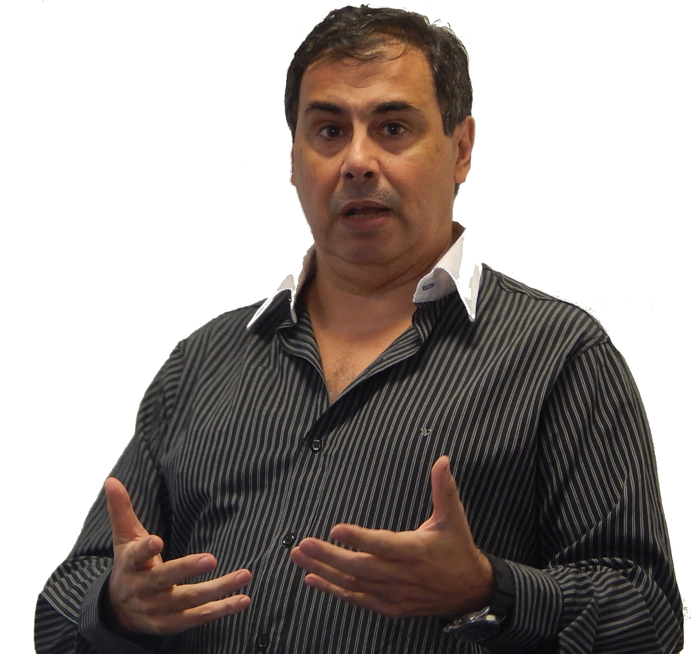

PhD · Data Scientist · Software Engineer · Epistemologist · ITF International Instructor
"Nothing human is foreign to me."
PhD in Epistemology and History of Science and Bachelor's in Computer Science (UBA). Over three decades combining technology, academic research, and an unwavering passion for ITF Taekwon-Do, which he has practiced since 1975 alongside his entire family.

Career
Technology and martial arts share the same root: the discipline of perfecting every detail.
Education & Teaching
Martial Art & Family
VI Dan ITF (Badge 104657). International Class A Referee (A-1281 / B-847). Practicing ITF Taekwon-Do since 1975.
A discipline that shapes life, family and values. His wife and daughter have won titles at World Cups, World Championships, Pan-American and South American Championships.
Founder and Director since 2007. Over 100 practitioners. Continental champions trained in the dojo.
www.anjong.com.ar
Gallardo 616, Versailles, CABA
• ITF Business and Marketing Committee (2019–2027)
• FETRA Refereeing Instructors Team (2024–2025)
• FETRA Umpires Committee (2019–2021 and 2025–present)
• Sportdata Specialist (official ITF system)
| Year | Event | Location |
|---|---|---|
| 2025 | World Championship World | Croatia |
| 2024 | World Cup Cup | Argentina |
| 2023 | World Championship World | Finland |
| 2022 | World Cup Cup | Slovenia |
| 2021 | World Championship (Virtual) | – |
| 2020 | World Cup (Virtual) | – |
| 2019 | World Championship World | Germany |
| 2018 | World Cup Cup | Australia |
| 2017 | World Championship World | Ireland |
| 2016 | World Cup Cup | Hungary |
| 2014 | World Cup Cup | Jamaica |
| Event | Details |
|---|---|
| Pan-American Championships | All editions since 2010 |
| Central & South American Championships | All editions since 2013 |
| Argentine National Tournaments | Continuous participation |
| World Selection Events | 2009, 2011, 2013, 2015, 2017, 2019, 2021, 2023 |
Has served as Center Referee, Corner Judge and Jury President at the highest-level ITF events.
Research
Program committee member of international conferences SKIMA 2006–2009, WSC 2004–2012, and IEEE CSIDC 2004. IEEE Member (No. 41378871) and member of the IEEE Technical Council on Software Engineering.
Contact
CABA, Argentina